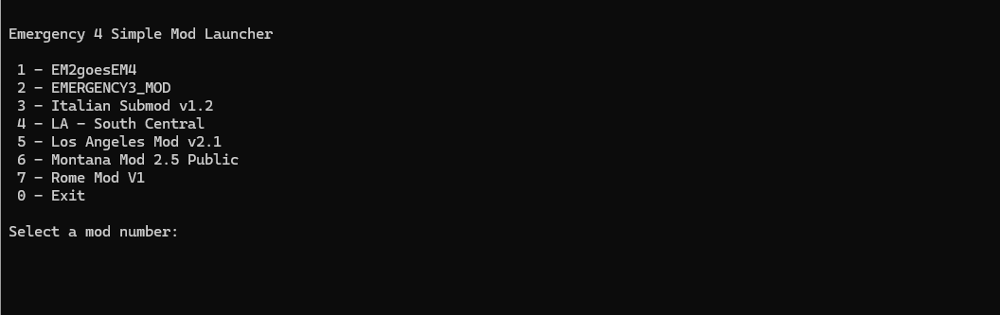

Emergency 4
RELEASE 1.0

Drag to compare · Original 3440 × 1440 screenshots, captured at different moments.
EMERGENCY 4 / DELUXE / 911: FIRST RESPONDERS
Widescreen Fix
Give your emergency services room to work. A wider view of the action, with menus and HUD that keep their original proportions.
- Resolution & aspect ratioCustom resolutions, widescreen and ultrawide.
- Field of viewExpand the horizontal view while preserving vertical framing.
- Menu, HUD & mouse alignmentChoose proportional or stretched interface scaling.
- Windowed modeSwitch between fullscreen and windowed in the INI.
Compatibility & installation notes
Intended for Emergency 4, Emergency 4 Deluxe and 911: First Responders, regardless of language. Engine signatures are used to recognize supported code. Not every retail, digital or protected build has been verified; unrecognized builds are left unchanged. Custom mod interfaces, movies and embedded 3D views may need separate fixes.
Extract the ZIP beside the actual game executable, preserving the scripts folder. It contains only the loader, ASI plugin and INI. If upgrading from an earlier on-disk patch, restore the original game files first. If another loader or mod DLL is already installed, follow the full instructions before replacing it.

BONUS TOOL
Simple Mod Launcher
EM4SMD reads your Mods folders and launches the mod you select by number. Place the CMD file beside Em4Deluxe.exe or in a direct subfolder. Windows PowerShell is required.
Get it from BONUS Downloads above.
Instructions & source ↗